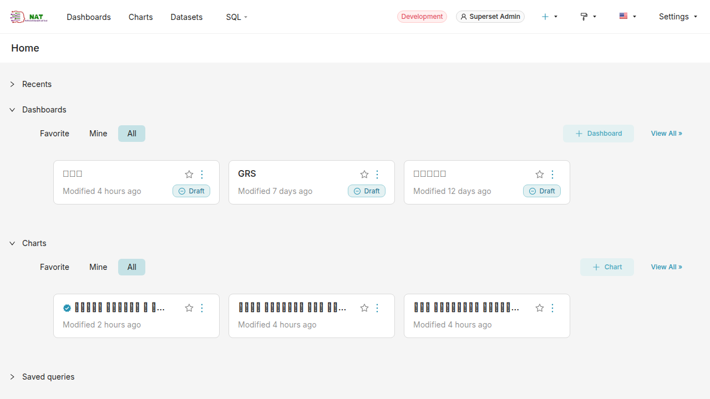
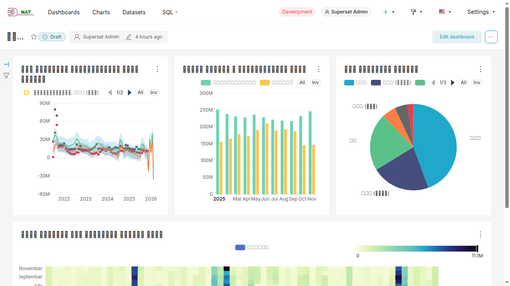
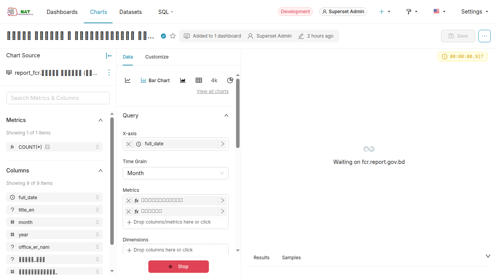
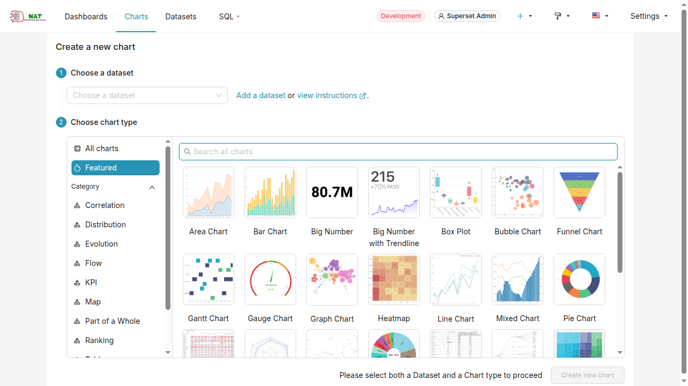
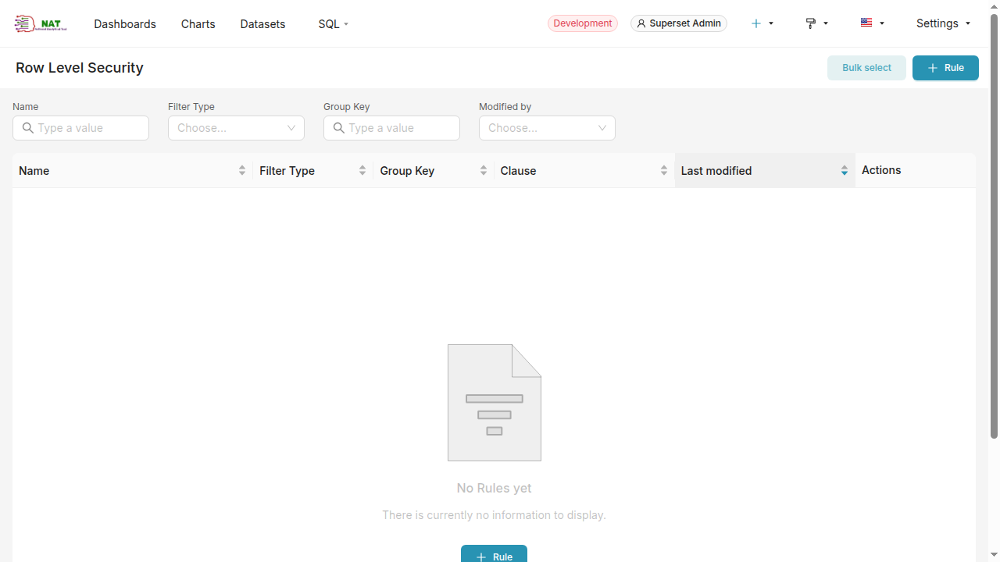

✍️ SQL ল্যাব

- শক্তিশালী এডিটর: মাল্টি-ট্যাব SQL IDE।
- স্কিমা ব্রাউজার: তাৎক্ষণিকভাবে DB টেবিল এক্সপ্লোর করুন।
- রেজাল্ট ভিজ্যুয়ালাইজ করুন: এক ক্লিকেই চার্ট বিল্ডার।
- ভার্চুয়াল ডাটাবেস: কুয়েরি সেভ করুন ডাটা সোর্স হিসেবে।
একটি মডার্ন, এন্টারপ্রাইজ-রেডি বিজনেস ইন্টেলিজেন্স ওয়েব অ্যাপ্লিকেশন।








প্লেইন ইংলিশে ডাটা কুয়েরি করার জন্য Natural Language Querying (NLQ) এবং ইনস্ট্যান্ট উত্তর পান।
ডাটা সেটের মধ্যে অটোমেটিক অ্যানোমালি, ট্রেন্ড এবং কি-ড্রাইভার ডিটেকশন।
সিলেক্টেড ডাটা ফিল্ডের উপর ভিত্তি করে বেস্ট ভিজ্যুয়ালাইজেশন টাইপের জন্য ইন্টেলিজেন্ট রিকমেন্ডেশন।
NAT (National Analytical Tool) হলো একটি মডার্ন, এন্টারপ্রাইজ-রেডি বিজনেস ইন্টেলিজেন্স ওয়েব অ্যাপ্লিকেশন যা ওপেন-সোর্স Apache Superset প্রজেক্টের উপর ভিত্তি করে তৈরি।
এটি একটি শক্তিশালী স্ট্যাকের উপর তৈরি যার মধ্যে রয়েছে ব্যাকএন্ডের জন্য Python (Flask), ফ্রন্টএন্ডের জন্য React, এবং ডাটাবেস কানেক্টিভিটির জন্য SQLAlchemy।
NAT প্রায় সব SQL-স্পিকিং ডাটাবেস সাপোর্ট করে, যার মধ্যে রয়েছে PostgreSQL, MySQL, Oracle, MS SQL, Redshift, Snowflake, ClickHouse, Trino এবং আরও অনেক।
হ্যাঁ, ইউজাররা সহজেই CSV, Excel এবং Columnar ফাইল আপলোড করে ডাটা সেট তৈরি করতে পারে এবং তাৎক্ষণিকভাবে ভিজ্যুয়ালাইজ করতে পারে।
অবশ্যই। আমরা Role-Based Access Control (RBAC), Row-Level Security (RLS) এবং এনক্রিপ্টেড ডাটাবেস কানেকশনের মাধ্যমে এন্টারপ্রাইজ-গ্রেড সিকিউরিটি ব্যবহার করি।
এটি আপনাকে সেন্ট্রালি ভার্চুয়াল মেট্রিক্স (যেমন, "Revenue = Price * Qty") এবং ক্যালকুলেটেড কলাম ডিফাইন করতে দেয়, যা পরে সব চার্টে পুনরায় ব্যবহার করা যায়।
হ্যাঁ! "SQL Lab" একটি শক্তিশালী, মাল্টি-ট্যাব SQL IDE প্রদান করে যা অ্যাডভান্সড ইউজারদের সরাসরি ডাটা কুয়েরি করতে এবং রেজাল্ট ভিজ্যুয়ালাইজ করতে দেয়।
আপনি ডিরেক্ট লিংক শেয়ার করতে পারেন, ইমেইলে PDF/ইমেজ রিপোর্ট পাঠাতে পারেন, অথবা অন্য অ্যাপ্লিকেশনে ড্যাশ বোর্ড সিকিউরলি এমবেড করতে পারেন।
হ্যাঁ, ড্যাশ বোর্ড নির্দিষ্ট ইন্টারভালে অটো-রিফ্রেশ কনফিগার করা যায়, এবং আর্কিটেকচারটি বিশাল ডাটা সেট হ্যান্ডেল করার জন্য অ্যাসিনক্রোনাস কুয়েরি সাপোর্ট করে।
আমাদের ৪০+ বিল্ট-ইন ভিজ্যুয়ালাইজেশন টাইপ আছে, সাধারণ বার এবং লাইন চার্ট থেকে শুরু করে অ্যাডভান্সড জিওস্পেশিয়াল ম্যাপ (DeckGL), স্যাঙ্কি ডায়াগ্রাম এবং হিটম্যাপ পর্যন্ত।
হ্যাঁ, আর্কিটেকচারটি এক্সটেনসিবল। ডেভেলপাররা প্লাগিন সিস্টেম ব্যবহার করে কাস্টম ভিজ্যুয়ালাইজেশন প্লাগিন তৈরি করতে পারে।
আমরা স্ট্যান্ডার্ড রোল (Admin, Alpha, Gamma) এবং গ্র্যানুলার কাস্টম রোল ডিফাইন করার সুবিধাসহ একটি কমপ্রিহেনসিভ RBAC সিস্টেম ব্যবহার করি।
হ্যাঁ, Row-Level Security (RLS) আপনাকে ফিল্টার ডিফাইন করতে দেয় যা ইউজারের রোল বা ID-র উপর ভিত্তি করে ডাটা রো রেস্ট্রিক্ট করে।
হ্যাঁ, চার্ট, ড্যাশ বোর্ড, ডাটা সেট এবং ইউজার ম্যানেজমেন্টের প্রোগ্রাম্যাটিক এক্সেসের জন্য একটি পাবলিক REST API এভেলেবল।
হ্যাঁ, আপনি ড্যাশ বোর্ড বা চার্টের স্ন্যাপশটসহ অটোমেটেড ইমেইল বা স্ল্যাক রিপোর্ট শিডিউল করতে পারেন।
আমরা কুয়েরি রেজাল্ট স্টোর করার জন্য একটি ক্যাশিং লেয়ার (Redis, Memcached, ইত্যাদি সাপোর্টেড) ব্যবহার করি, যা পপুলার ড্যাশ বোর্ডের জন্য সাব-সেকেন্ড লোড টাইম নিশ্চিত করে।
হ্যাঁ, এমবেডেড SDK আপনাকে কাস্টম অথেন্টিকেশনের মাধ্যমে আপনার নিজস্ব কাস্টমার-ফেসিং অ্যাপ্লিকেশনে ড্যাশ বোর্ড এমবেড করতে দেয়।
এক্সপ্লোর হলো একটি নো-কোড ইন্টারফেস যেখানে আপনি মেট্রিক্স এবং ডাইমেনশন সিলেক্ট করে, ফিল্টার অ্যাপ্লাই করে এবং স্টাইল কাস্টমাইজ করে চার্ট তৈরি করতে পারেন।
হ্যাঁ, DeckGL এবং Mapbox ইন্টিগ্রেশন স্ক্যাটারপ্লট, গ্রিড লেয়ার এবং পলিগন ম্যাপের মতো শক্তিশালী জিওস্পেশিয়াল ভিজ্যুয়ালাইজেশন সাপোর্ট করে।
হ্যাঁ, অ্যাপ্লিকেশনটি ক্লাউড-নেটিভ এবং স্কেলেবল ডিজাইন করা হয়েছে, যা Docker এবং Kubernetes এনভায়রনমেন্টে সিমলেসলি রান করে।